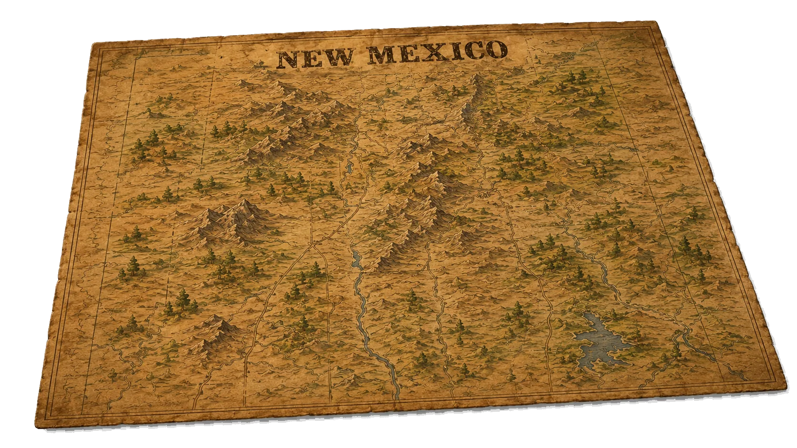
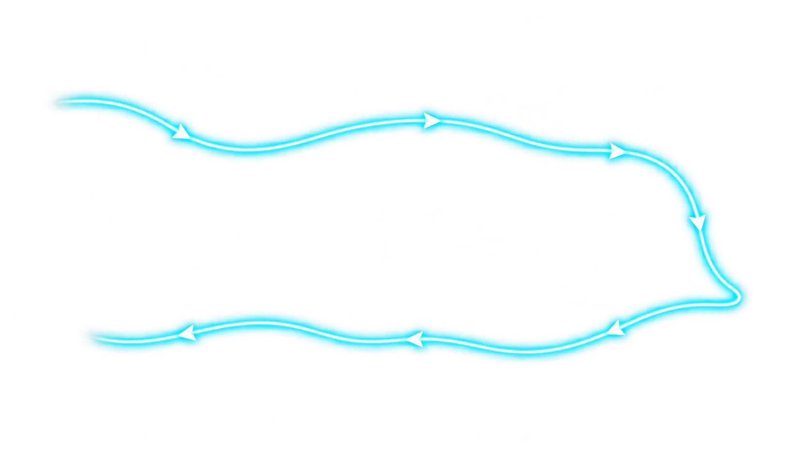

PolitíCat
NM
☰
Explore NM
Map
Elections
Pulse
Learn
The Trail
Community
About
Ask a Question
POLITÍCAT NM •
CIVIC EXPLORER
🛈 ILLUSTRATIVE WALKTHROUGH — EVERY CLAIM WEARS ITS EVIDENCE STATE


$
🪙
START
📄
REVENUE
🏛️
LEGISLATURE
📘
AGENCY
📋
CONTRACT
🚚
VENDOR
🔍
OVERSIGHT
🚩
END
The dollar moves.
The receipts stay.
← Back
KEYBOARD CONTROLS
←
→
to navigate
Enter
to select
Next step →